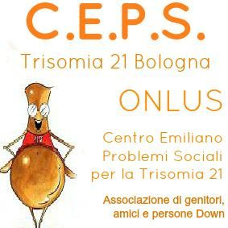
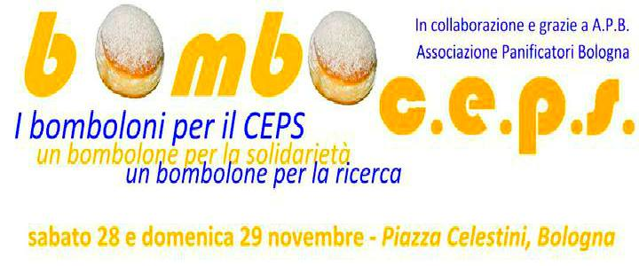
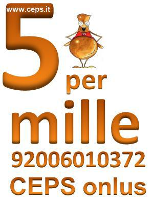

35 anni insieme: Che cos'e la Sindrome di Down
Trentacinque anni fa, nel dicembre 1980, l’atto costitutivo sancì la volontà di un gruppo di persone e di famiglie di avere uno strumento giuridico per meglio tutelare i loro figli nati da poco, persone con Sindrome di Down. Tra i motivi che indussero i fondatori alla costituzione di una specifica Associazione, diventata Onlus diciotto anni dopo, spiccò il fatto che nel territorio bolognese non furono riscontrate attività associative esistenti interessate ai minori con disabilità genetica e ritardo mentale. Continua
Le attivita'
Da anni svolgiamo, in collaborazione con i servizi territoriali delle AUSL di tutta l’Emilia Romagna e le istituzioni educative e formative, un lavoro di affiancamento alle famiglie per sostenerle nella loro funzione genitoriale, contribuendo a dare indirizzi e consigli di tipo pedagogico, dopo aver osservato e monitorato lo sviluppo della relazione genitore-bambino e le tappe dello sviluppo psicomotorio del bambino. -accoglienza alla famiglia e disponibilità ad accompagnarla nel percorso di crescita del figlio. -consulenza per ciò che riguarda i diritti socio-legislativi. – incontri di approfondimento su temi specifici L’obiettivo delle prime fasi è quindi quello di sostenere, valorizzare, aumentare le competenze genitoriali e l’interazione tra il bambino e il suo ambiente. Continua
Dona il 5 x Mille e Sostieni il CEPS
Anche quest'anno con la dichiarazione dei redditi, apponi la tua firma nel settore destinato alle Organizzazioni Non Lucrative di Attivita' Sociale (ONLUS), indicando nell apposito spazio il codice fiscale: 92006010372 del CEPS ONLUS.